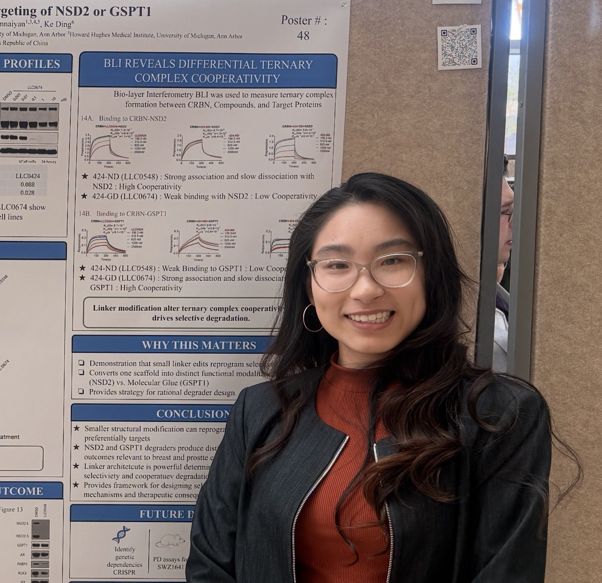

Biomedical engineering graduate with hands-on training in oncological research. Driven to advance cancer therapies through translational research and genetic discovery.

I'm a biomedical engineering graduate with extensive hands-on training in oncological research, currently based in the Boston area. My work focuses on understanding the molecular mechanism, with a passion for drug discovery and translational oncology.
What truly drives me is the belief that the answers to cancer lie at the intersection of genetics, drug development, and sheer persistence. My work on NSD2 and GSPT1 interactions has shown me just how much we still don't know—and that's exactly what excites me. Every failed experiment teaches me something new, and every breakthrough, no matter how small, feels like a step closer to therapies that could actually change lives. I'm particularly drawn to the challenge of translating mechanistic discoveries into real-world treatments, whether that's through optimizing drug candidates or uncovering new genetic vulnerabilities in cancer cells. Recently I relocated to the greater Boston area, I'm eager to immerse myself in a community where cutting-edge science and deep collaboration are the norm—and to grow into the kind of researcher who not only asks bold questions but also knows how to answer them.
Outside the lab, I live for movement and rhythm. You'll often find me dancing (it's my favorite way to unwind), playing sports, or just vibing to good music while I cook or commute. I think science and art aren't that different—both take creativity, persistence, and a willingness to experiment. Whether I'm troubleshooting a Western blot or learning a new choreography, I love the process of getting a little better every day.
I'm happiest when I'm learning something new, connecting with curious people, or finding ways to make complex science feel accessible and exciting. Let's chat if you're into research, dance, or just a good playlist, I'm always down for a conversation.
Core laboratory, computational, and communication skills.
Mammalian cell culture & maintenance ; protein analysis (Western blot, protein harvesting, ELISA, thermal stability analysis); nucleic acid workflows (RNA/DNA extraction, PCR, plasmid amplification, cloning, Gibson Assembly); functional genomics (monoclonal selection, IC50 determination); drug-development support (dose-response validation, selectivity screening, mechanistic verification, BLI/SPR binding analysis); histology & invivo support (necropsy, tissue cassette embedding, IHC staining); method validation, GMP/GDP compliance, and reagent preparation & inventory management.
Microsoft Office Suite (Excel, PowerPoint, Word) for data documentation, statistical analysis, and scientific presentation; MATLAB for quantitative data analysis, signal processing, and experimental modeling; basic CAD design (SolidWorks) for biomedical device prototyping and feasibility testing; graphing and statistical tools for experimental reproducibility, figure preparation, and manuscript support.
Fluent: English & Mandarin Chinese (HSK Level 6 certified), with a conversational understanding of Fujianese. Skilled at translating complex scientific concepts for diverse audiences (students, collaborators, non-specialists). Patient, adaptable communicator experienced in de-escalation, mentorship, and collaborative problem-solving.
Research, technical support, and teaching roles.
Biomedical design projects at the University of Michigan.
Real-time alert device to detect pre-episode drowsiness in drivers with narcolepsy. Analyzed physiological symptom progression (blink rate, slow eye movements, reduced HRV, lane deviation) to identify a critical intervention window before microsleep, mapped device failure modes via task analysis, benchmarked existing solutions against six clinical criteria, and prepared verification & validation plans for external design review.
Low-cost benchtop multiparameter physiological monitor integrating sidestream capnography (NDIR CO2 sensor, Arduino Uno) and oscillometric blood-pressure measurement (pressure sensor, signal-conditioning circuits, Arduino Leonardo). Developed algorithms to estimate EtCO2 and systolic/diastolic/mean arterial pressure; validated EtCO2 in the 35–45 mmHg clinical range and BP within 15 mmHg of a commercial standard.
Inexpensive ex vivo vascular culture system that mimics physiological flow and pressure to support vascular biology studies, drug screening, and tissue-engineered product testing. Contributed to CAD design, feasibility testing, and documentation so the system could be adopted by other researchers.
Theoretical drug-eluting bypass graft delivering sirolimus locally to prevent restenosis in peripheral artery disease. Conducted a literature review on polymer coatings, stent technologies, and bypass outcomes; developed performance metrics; proposed testing methods; and presented to faculty.
Biodegradable artificial tendon modeled with composite biomaterials in a four-person team. Focused on mechanical strength, biocompatibility, and degradation kinetics; produced a theoretical prototype supported by finite element analysis and discussed pathways to preclinical testing.
Theoretical handheld biosensor for detecting illicit drugs, designed with client Dr. Rosenberg. Led background research on detection methods, user-interface design, and material selection, and delivered a final presentation with proof-of-concept schematics and use-case scenarios.
Student organizations and community roles.
Excellence in business, leadership, and the performing arts.
Honor given to undergraduate students for outstanding research poster and oral presentations during the program's research symposiums.
Pennsylvania State Convention — placed 5th out of hundreds of competitors, missing Nationals by a single placement (top 4 advance).
Awarded top honors in Chinese zither (Guzheng) performance at Level 2.
Secured 2nd place in Level 3, demonstrating continued excellence and musical progression.
Passed HSK Level 5 (2021) and Level 6 (2022) — certifying advanced professional-level fluency in Mandarin Chinese for academic and professional settings.
Degree and relevant coursework.
Biopharmaceutical Engineering, Biomedical Design, Emergency Response, Quantitative Cell Biology, Quantitative Physiology, Bioreaction Engineering & Design, Biophysics & Thermodynamics, Introduction to Biomechanics, Circuits & Systems for Biomedical Applications, Biomaterials Design & Applications, Composite Materials, Cell & Molecular Biology, Human Anatomy, Polymeric Materials, Structures of Materials, Biomedical Instrumentation and Design.
Open to new partnerships in Research.
I'm always open to new research opportunities, collaborations, or a conversation about cancer biology.